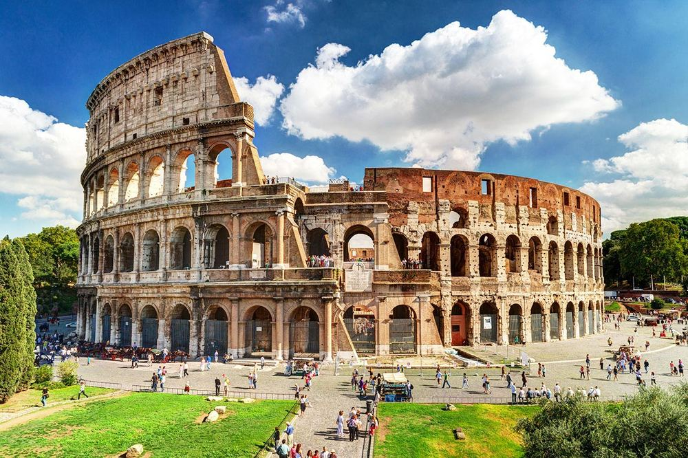

罗马斗兽场 Colosseo / Colosseum
这里正式名称是弗拉维圆形剧场，曾容纳约5万名观众。中世纪以后“Colosseum”这个名字反而来自附近的尼禄巨像，而不是单纯形容建筑巨大。
现场看什么
先看竞技场地面与地下结构的关系，再抬头看层层看台；想象不同阶层观众从哪里观看。你们16:00入场也很合适，书里特别建议晚下午光线更柔、气温更舒服。
先看竞技场地面与地下结构的关系，再抬头看层层看台；想象不同阶层观众从哪里观看。你们16:00入场也很合适，书里特别建议晚下午光线更柔、气温更舒服。
📍 9/20 · 16:00 已预约
图源：《Lonely Planet Italy》p.238 · viacheslav lopatin / Shutterstock · 低分辨率个人行程参考图